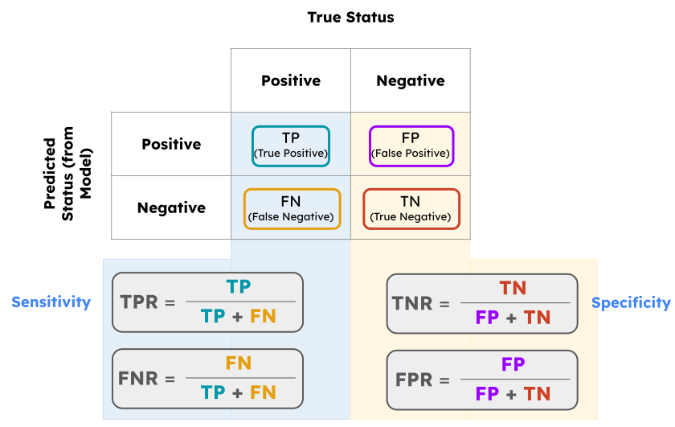
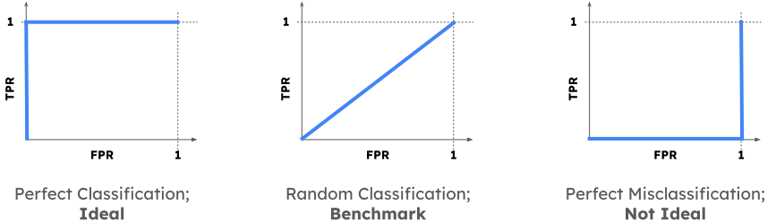

PSTAT 100: Lecture 17
Classification
Department of Statistics and Applied Probability; UCSB
Summer Session A, 2025
\[ \newcommand\R{\mathbb{R}} \newcommand{\N}{\mathbb{N}} \newcommand{\E}{\mathbb{E}} \newcommand{\Prob}{\mathbb{P}} \newcommand{\F}{\mathcal{F}} \newcommand{\1}{1\!\!1} \newcommand{\comp}[1]{#1^{\complement}} \newcommand{\Var}{\mathrm{Var}} \newcommand{\SD}{\mathrm{SD}} \newcommand{\vect}[1]{\vec{\boldsymbol{#1}}} \newcommand{\tvect}[1]{\vec{\boldsymbol{#1}}^{\mathsf{T}}} \newcommand{\hvect}[1]{\widehat{\boldsymbol{#1}}} \newcommand{\mat}[1]{\mathbf{#1}} \newcommand{\tmat}[1]{\mathbf{#1}^{\mathsf{T}}} \newcommand{\Cov}{\mathrm{Cov}} \DeclareMathOperator*{\argmin}{\mathrm{arg} \ \min} \newcommand{\iid}{\stackrel{\mathrm{i.i.d.}}{\sim}} \]
RMS Titanic
- The RMS Titanic was an ocean liner that set sail from Southampton (UK) to New York (US) on April 10, 1912.

- 5 days into its journey, on April 15, 1912, the ship collided with an iceberg and sank.
- Tragically, the number of lifeboats was far fewer than the total number of passengers, and as a result not everyone survived.
- A passenger/crew manifest still exists, which includes survival statuses.
RMS Titanic
| PassengerId | Survived | Pclass | Name | Sex | Age |
|---|---|---|---|---|---|
| 1 | 0 | 3 | Braund, Mr. Owen Harris | male | 22 |
| 2 | 1 | 1 | Cumings, Mrs. John Bradley (Florence Briggs Thayer) | female | 38 |
| 3 | 1 | 3 | Heikkinen, Miss. Laina | female | 26 |
| SibSp | Parch | Ticket | Fare | Cabin | Embarked |
|---|---|---|---|---|---|
| 1 | 0 | A/5 21171 | 7.25 | S | |
| 1 | 0 | PC 17599 | 71.28 | C85 | C |
| 0 | 0 | STON/O2. 3101282 | 7.925 | S |
RMS Titanic
Question: given a passenger’s information (e.g. sex, class, etc.), can we predict whether or not they would have survived the crash?
Firstly, based on domain knowledge available to us, we believe there to be a relationship between survival rates and demographics.
- For example, it is known that women and children were allowed to board lifeboats before adult men; hence, it’s plausible to surmise that women and children had higher survival rates than men.
- Additionally, lifeboats were located on the main deck of the ship; so, perhaps those staying on higher decks had greater chances of survival than those staying on lower decks.
RMS Titanic
First Model
To make things more explicit, let’s suppose we wish to predict survival based solely on a passenger’s age.
This lends itself nicely to a model, with:
- Response: survival status (either
1forsurvived, or0fordied) - Predictor: age (numerical, continuous)
- Response: survival status (either
Now, note that our response is categorical. Hence, our model is a classification model, as opposed to a regression one.
The (parametric) modeling approach is still the same:
- Propose a model
- Estimate parameters
- Assess model fit
RMS Titanic
First Model
We just have to be a bit more creative about our model proposition.
Let’s see what happens if we try to fit a “linear” model:
yi= β0 + β1xi+ εi

RMS Titanic
First Model

- But what does this line mean?
- The problem is in our proposed model.
RMS Titanic
First Model
yi = β0 + β1 xi + εi
- For any i,
yiwill either be zero or one. - But, for any i,
xiwill be a positive number, not necessarily constrained to be either 0 or 1. - So, this model makes no sense; how can something that is categorical equal something that is numerical?
- There are a couple of different resolutions - what we discuss in PSTAT 100 is just one possible approach.
RMS Titanic
Second Model
- First Idea: rethink the way we incorporate randomness (error) into our model.
- Let’s define the random variable Yi to be the survival status of the ith (randomly selected) passenger. Then Yi ~ Bern(πi), where πi denotes the probability that the ith (randomly selected) passenger survives.
- Second Idea: instead of modeling Yi directly, model the survival probabilities, πi.
- After all, the probability of surviving is likely related to age.
- But, π
i= β0 + β1xiis still not a valid model, since πi is constrained to be between 0 and 1, whereas (β0 + β1xi) is unconstrained.
RMS Titanic
Second Model
Third Idea: apply a transformation to β0 + β1
xi.Specifically, if we can find a function g that maps from the real line to the unit interval, then a valid model would be π
i= g(β0 + β1xi).What class of (probabilistic) functions map from the real line to the unit interval?
- CDF’s!
Indeed, we can pick any CDF to be our transformation g. There are two popular choices, giving rise to two different models:
- Standard Normal CDF, leading to probit models
- Logistic Distribution CDF, leading to logit models
Probit vs. Logit Models
Probit Model: πi = Φ(β0 + β1 xi)
\[ \Phi(x) := \int_{-\infty}^{x} \frac{1}{\sqrt{2\pi}} e^{-z^2 / 2} \ \mathrm{d}z \]

Logit Model: πi = Λ(β0 + β1 xi)
\[ \Lambda(x) := \frac{1}{1 + e^{-x}} \]

- Logit models are more commonly referred to as logistic regression models.
Logistic Regression
As an example, let’s return to our Titanic example where π
irepresents the probability that the ith passenger survived, andxidenotes the ith passenger’s age.A logistic regression model posits \[ \pi_i = \frac{1}{1 + e^{-(\beta_0 + \beta_1 x_i)}} \]
Equivalently, \[ \ln\left( \frac{\pi_i}{1 - \pi_i} \right) = \beta_0 + \beta_1 x_i \]
- Aside: we call the function g(t) = ln(t / (1 - t)) the logit function.
Logistic Regression
Model Assumptions
Now, as with pretty much all statistical models, there are some assumptions that must be met in order for a Logistic Regression Model (LRM) to be appropriate.
The two main assumptions of the LRM are:
- The probability of the outcome changes monotonically with each explanatory variable
- Observations are independent
Technically, we are also assuming that the true conditional probability of success \(\Prob(Y_i = 1 \mid X_i = x_i)\) is logistically-related to the covariate value xi.
In PSTAT 100, we’ll opt for a “knowledge-based” approach to check if the assumptions are met; that is, we’ll simply use our knowledge/intuition behind the true DGP.
Logistic Regression
- The second formulation of our model makes it a bit easier to interpret the coefficients:
- Ceterus paribus (holding all else constant), a one-unit increase in
xiis modeled to be associated with a β1 -unit increase in the log-odds of πi. - β0 represents the log-odds of survival of a unit with a predictor value of zero.
- Ceterus paribus (holding all else constant), a one-unit increase in
- In
R, we fit a logistic regression using theglm()function.- This is because logistic regression is a special type of what is known as a Generalized Linear Model (GLM), which is discussed further in PSTAT 127.
Logistic Regression
Titatnic Dataset
Call:
glm(formula = Survived ~ Age, family = "binomial", data = titanic)
Coefficients:
Estimate Std. Error z value Pr(>|z|)
(Intercept) -0.05672 0.17358 -0.327 0.7438
Age -0.01096 0.00533 -2.057 0.0397 *
---
Signif. codes: 0 '***' 0.001 '**' 0.01 '*' 0.05 '.' 0.1 ' ' 1
(Dispersion parameter for binomial family taken to be 1)
Null deviance: 964.52 on 713 degrees of freedom
Residual deviance: 960.23 on 712 degrees of freedom
(177 observations deleted due to missingness)
AIC: 964.23
Number of Fisher Scoring iterations: 4\[ \ln\left( \frac{\widehat{\pi}_i}{1 - \widehat{\pi_i}} \right) = -0.05672 -0.01096 x_i \]
Logistic Regression
Titatnic Dataset
- So, as expected, a one-unit increase in
agecorresponds to a decrease in the log-odds of survival.- Again, this is “expected” because we know children were allowed to board lifeboats before adults.
- By the way, can anyone tell me why we use
family = "binomial"in our call toglm()?- Specifically, what is “binomial” about our logistic regression model? (Hint: go back to the beginning of how we constructed our model!)
- Example Question: Karla was around 24 years old. What is the probability that she would have survived the crash of the Titanic?
Logistic Regression
Titatnic Dataset
glm_age <- glm(Survived ~ Age, data = titanic, family = "binomial")
(p1 <- predict(glm_age, newdata = data.frame(Age = 24))) 1
-0.3198465 Caution
predict.glm() will give you the predicted log-odds - to find the true predicted survival probability, you need to invert.
- So, based on our model, Karla has an approximately 42.1% chance of having survived the crash of the Titanic.
Logistic Regression
Titatnic Dataset
Code
glm1_c <- glm(Survived ~ Fare, data = titanic, family = "binomial") %>% coef()
pred_surv <- Vectorize(function(x){
1 / (1 + exp(-glm1_c[1] - glm1_c[2] * x))
})
titanic %>% ggplot(aes(x = Fare, y = Survived)) +
geom_point(size = 3) +
theme_minimal(base_size = 18) +
geom_smooth(method = "lm", formula = y ~ x, se = FALSE,
aes(colour = "Linear Regression"), linewidth = 2) +
stat_function(fun = pred_surv,
aes(colour = "Logistic Regression"), linewidth = 2) +
labs(colour = "Survival Probability") +
ggtitle("Survival Status vs. Fare")
- Does this make sense, based on our background knowledge?
Multiple Logistic Regression
- Of course, we can construct a logistic regression with multiple predictors:
\[\begin{align*} \pi_i & = \Lambda\left( \beta_0 + \sum_{j=1}^{p} \beta_j x_{ij} \right) = \frac{1}{1 - e^{-\left(\beta_0 + \sum_{j=1}^{p} \beta_j x_{ij} \right)}} \\ \mathrm{logit}(\pi_i) & = \beta_0 + \sum_{j=1}^{p} \beta_j x_{ij} \end{align*}\]
- Estimating the parameters ends up being a task and a half; indeed, there do not exist closed-form solutions for the optimal estimates.
- Instead, most computer programs utilize recursive algorithms to perform the model fits.
Your Turn!
Your Turn!
Adebimpe has found that a good predictor of whether an email is spam or not is the number of times the word “promotion” appears in its body. To that end, she has fit a logistic regression model to model an email’s spam/ham status as it relates to the number of times the word “promotion” appears. The resulting regression table is displayed below:
Coefficients:
Estimate Std. Error t value Pr(>|t|)
(Intercept) 0.68748 0.04360 15.768 < 2e-16 ***
num_prom 0.10258 0.01844 5.564 1.2e-07 ***
---
Signif. codes: 0 '***' 0.001 '**' 0.01 '*' 0.05 '.' 0.1 ' ' 1- What is the predicted probability that an email containing the word “promotion” 3 times is spam?
- Provide an interpretation for the value
0.01844in the context of this problem.
03:00
Classification
Now, logistic regression gets us estimated survival probabilities.
It does not, however, give us survival statuses - to get those, we need to build a classifier.
- For example, a few slides ago we said that 24-year-old Karla had a 42.1% chance of surviving the crash of the Titanic.
- But, if she were an actual passenger on the Titanic she would have either survived or not.
In binary classification (i.e. where our original response takes only two values,
survivedornot), our classifier typically takes the form: assignyi a value ofsurvivedif the survival probability is above some threshold c, and assignyi a value ofdid not surviveif the survival probability falls below the threshold.
Titanic Classifier
- To start, let’s explore the following classifier: {Yi = 1} if and only if the predicted survival probability was above 50%.
- Let’s also stick with our model that models survival probabilities in terms of only
Fare.
- Let’s also stick with our model that models survival probabilities in terms of only
- Can anyone tell me, in words, what these represent?
- What does this represent?
Confusion Matrices
Confusion Matrices
For example, in the context of the Titanic dataset:
- The count of true positives is the number of passengers correctly classified as having survived
- The count of false negatives is the number of passengers incorrectly classified as having died
The True Positive Rate (aka sensitivity) is the proportion of passengers who actually survived that were correctly classified as having survived.
The False Positive Rate (aka one minus the specificity) is the proportion of passengers who actually died that were incorrectly classified as having survived.
Confusion Matrices
Titanic Example
Classifier: \(\{Y_i = 1\} \iff \{ \widehat{\pi}_i > 0.5\}\)
| truth_+ | truth_- | |
|---|---|---|
| class_+ | 82 | 38 |
| class_- | 260 | 511 |
TPR: 0.2397661
FPR: 0.06921676Confusion Matrices
Titanic Example
Classifier: \(\{Y_i = 1\} \iff \{ \widehat{\pi}_i > 0.9\}\)
| truth_+ | truth_- | |
|---|---|---|
| class_+ | 14 | 6 |
| class_- | 328 | 543 |
TPR: 0.04093567
FPR: 0.01092896Performance of a Classifier
ROC Curves
So, we can see that our TPR and TNR will change depending on the cutoff value we select for our classifier.
This gives us the idea to perhaps use quantities like TPR and TNR to compare across different cutoff values.
Rather than trying to compare confusion matrices, it’s a much nicer idea to try and compare plots.
One such plot is called a Receiver Operating Characteristic (ROC) Curve, which plots the sensitivity (on the vertical axis) against (1 - specificity) (on the horizontal axis)
ROC Curves
- We pick the cutoff to be that which makes the ROC curve as close to the point (0, 1) as possible.
- This indicates we should use a cutoff of around 33%
Performance of a Classifier
ROC Curves
Allow me to elaborate a bit more on this last point.
The vertical axis of a ROC curve effectively represents the probability of a good thing; ideally, we’d like a classifier that has a 100% TPR!
Simultaneously, an ideal classifier would also have a 0% FPR (which is precisely what is plotted on the horizontal axis of an ROC curve).

Performance of a Classifier
ROC Curves
- ROC curves can also be used to compare across models as well.
- Model 1: Using
Fare,Age,Sex, andCabinas predictors - Model 2: Using
FareandAgeas predictors

- The ROC curve for model 1 is farther from the diagonal than model 2, indicating that it is the better choice.
Next Time
- In lab today, you’ll explore classification a bit further.
- Specifically, you’ll work through fitting a few logistic models and building a few classifiers based on a non-simulated dataset pertaining to dates (the fruit)
- There will be no new material tomorrow; instead, we’ll review for ICA 02.
- If you haven’t already, please read through the information document I posted on the website pertaining to ICA 02.
- As a reminder, all material (up to and including today’s lecture and lab) is potentially fair game for the ICA, though there will be a considerable emphasis on material from after ICA 01.
- Also, recall you’ll be getting early-access to Lab08 solutions by going to Section today!

PSTAT 100 - Data Science: Concepts and Analysis, Summer 2025 with Ethan P. Marzban